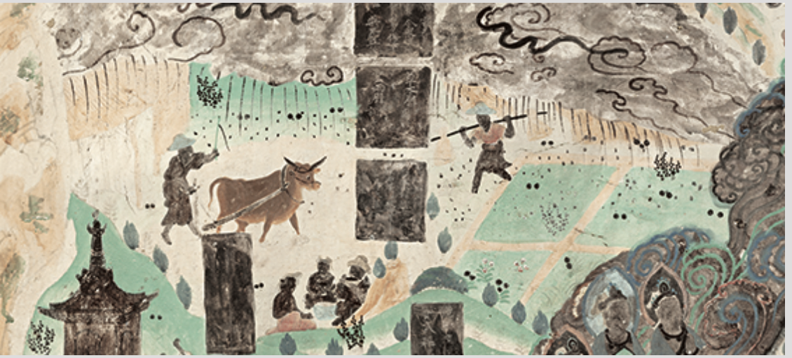
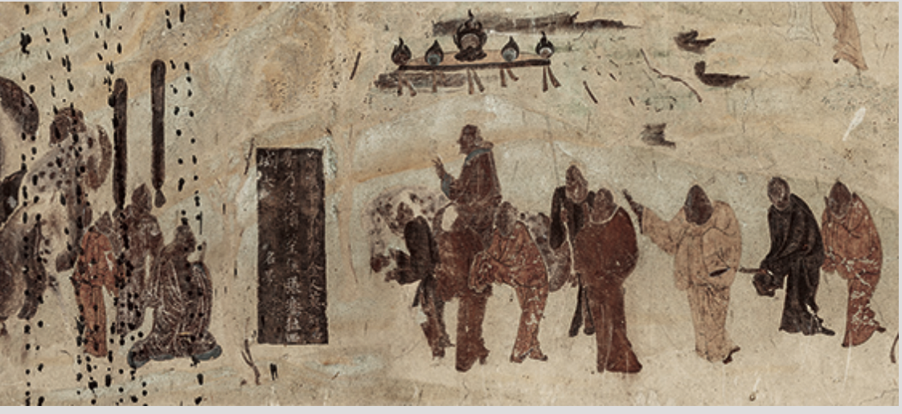
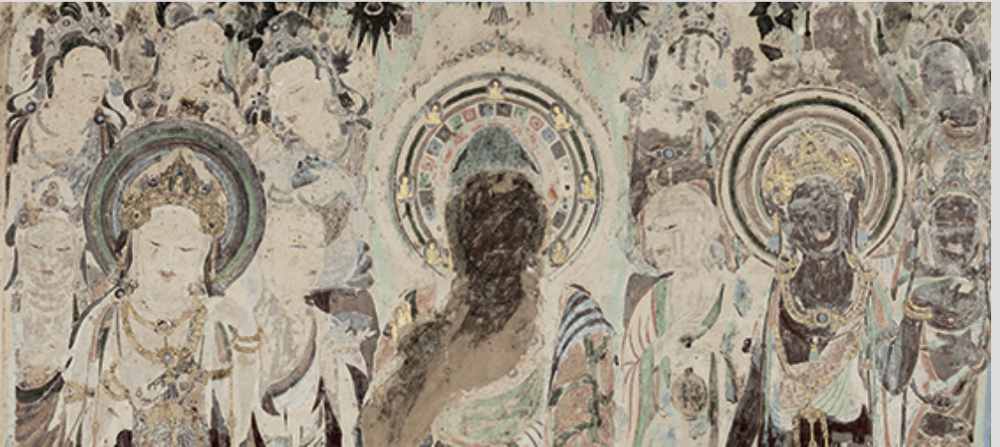
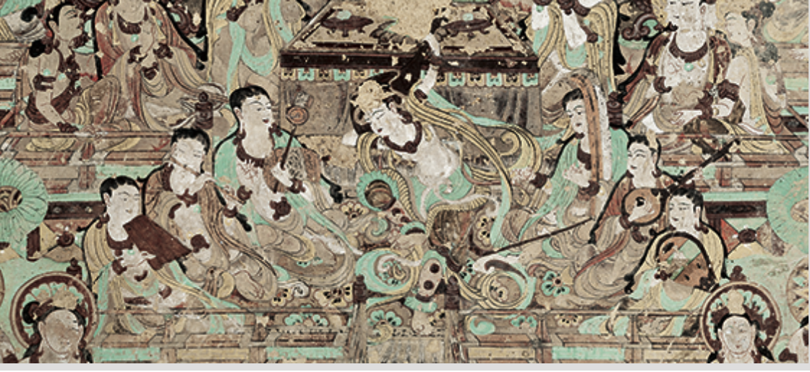

壁画图鉴

莫高窟 第23窟主室 北壁
时代：盛唐(公元713年-766年)
画面中央为佛说法图，周围及下部分别表现《法华经变》各品情节。
因部分画面模糊，可明确读识的有： “序品”、“方便品”、“譬喻品”、“信解品”、“授记品”、“从地涌出品”等。

莫高窟 第323窟主室 北壁
时代：初唐(公元618年-712年)
上画千佛，中部画佛教史迹画，自西向东依次为：
1.汉武帝获得匈奴祭天金人与张骞出使西域；
2.释迦浣衣池与晒衣石；
3.佛图澄之神异事迹；
阿育王拜外道尼乾子塔；
5.康僧会感应故事。

莫高窟 第57窟 主室 南壁
时代：初唐(公元618年-712年)
第五七窟南壁中央画一铺说法图，四周画千佛，下部画供养人（大部分已残毁）。
说法图为弥勒说法图，这铺说法图中佛、菩萨、弟子等形象达十五六身，
除了主尊佛像和两身大菩萨以及身材较小的天王外，其余的人都仅露出半身或露出头部。
中央的菩提宝盖下，弥勒佛结跏趺坐狮子座上，扬掌作说法相。

莫高窟 第112窟 主室 南壁
时代：中唐(公元762年-827年)
南壁西起画金刚经变、观无量寿经变各一铺，下屏风画模糊。
金刚经变以释迦牟尼佛结跏趺坐居中为主尊，诸菩萨、声闻、天王等围绕在身边。
经变的上部绘出流云缭绕，悠远浩渺的山水。
左上角绘有说法供养及为人解说金刚经；右上角绘有说法供养及轻贱是福；
下部绘有拜塔，歌利王故事。